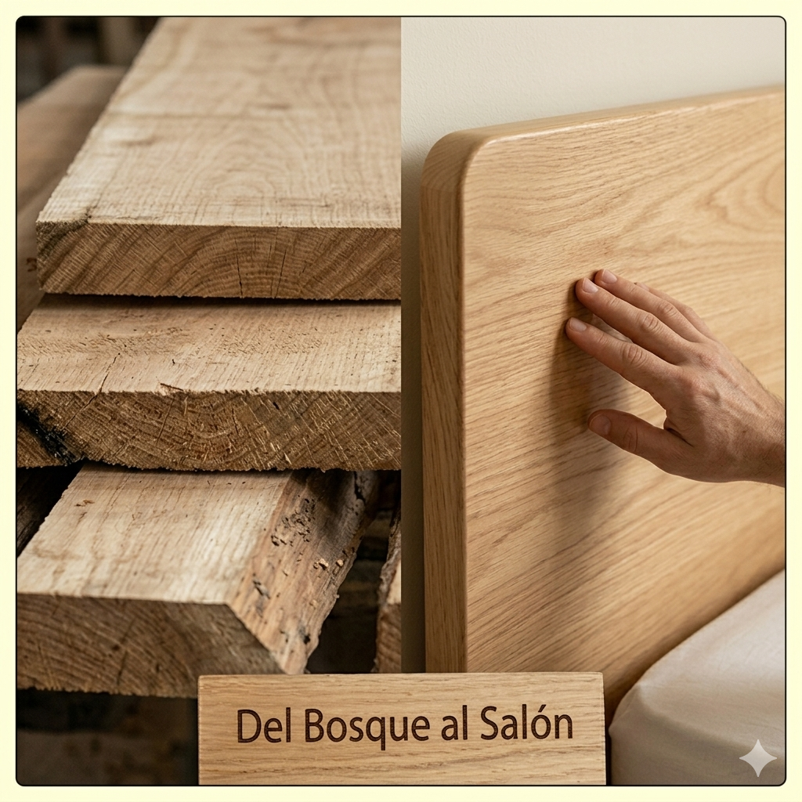
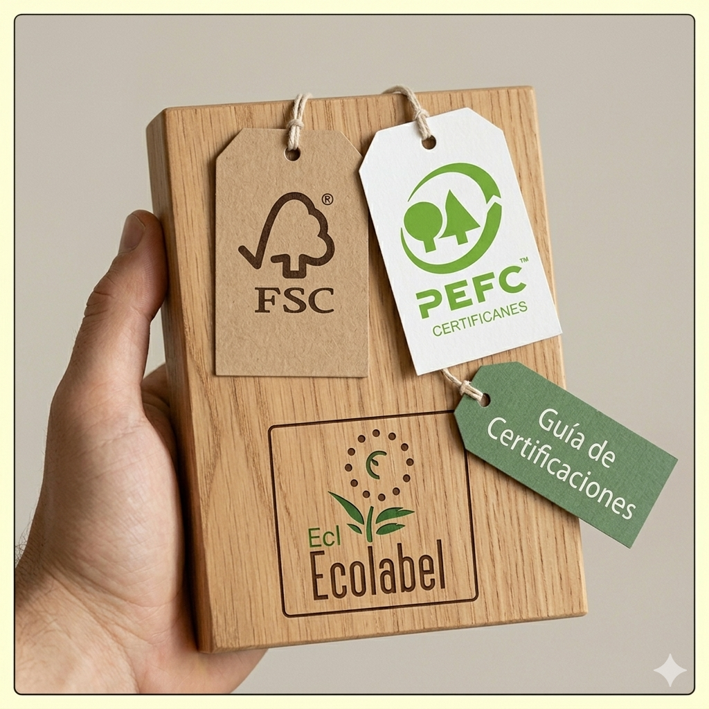
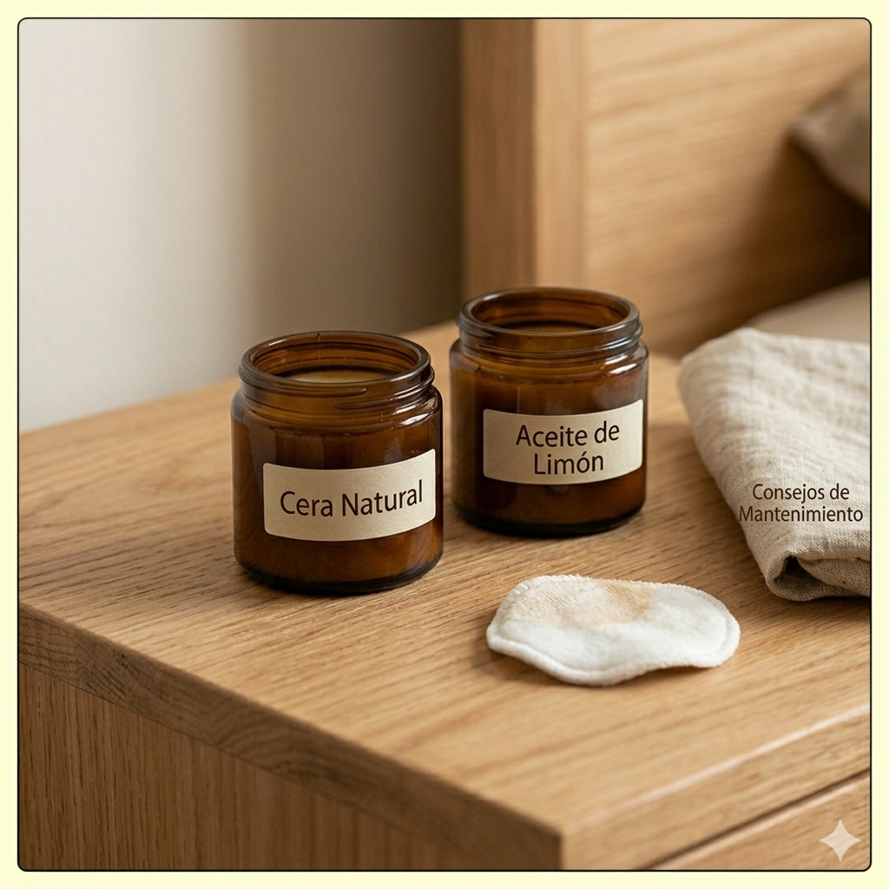
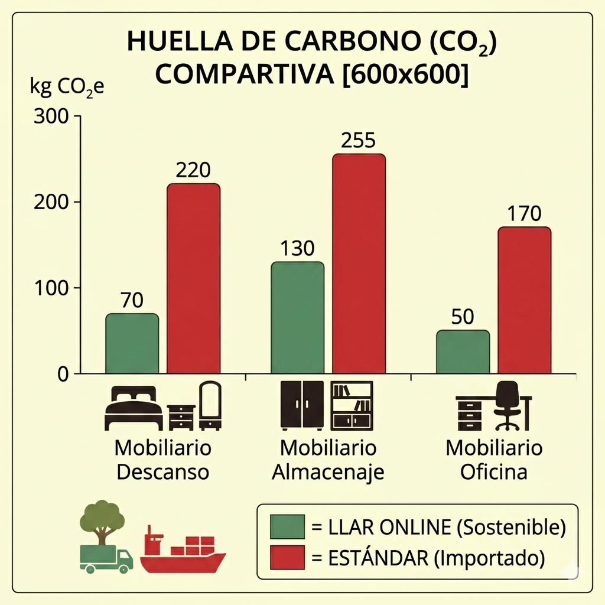

"Del Bosque al Salón": El Viaje de la Materia Prima
Observa la transformación: desde el tablón de roble en bruto hasta el acabado sedoso de nuestra Cama Brisa. Un proceso de lijado y pulido de precisión que respeta la veta natural de la madera.

Guía de Certificaciones: ¿Qué significan realmente las etiquetas?
No todas las etiquetas verdes son iguales. Desglosamos el significado de los sellos FSC, PEFC y Ecolabel para que entiendas cómo tu compra ayuda a proteger los bosques y reducir la huella de carbono.

Consejos de Mantenimiento Eco-Friendly
Aprende a cuidar tus muebles de madera maciza sin recurrir a químicos agresivos. Trucos naturales y rutinas sencillas para que la belleza del roble perdure durante generaciones.

Comparativa de Huella de Carbono (CO2)
El impacto del transporte. Visualiza cómo la fabricación local reduce drásticamente las emisiones de CO2 en comparación con los muebles de importación masiva.